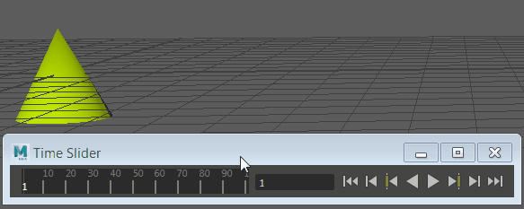

移动对象，然后按“S”键在时间滑块上设置关键帧。
设置关键帧
- 选择具有要设置关键帧的属性的对象。
- 将时间滑块(Time Slider)当前帧指示器移动到要设置关键帧的帧。
- 从“动画”(Animation)菜单集 (F4) 的“关键帧”(Key)菜单中选择“关键帧 > 设置关键帧”(Key > Set Key)，或者按 S 键。
- 每次调整时间滑块上的时间和移动对象时，您可以使用“自动关键帧”(Auto Key)
 按钮自动设置关键帧。请参见使用“自动关键帧”(Auto Key)。
按钮自动设置关键帧。请参见使用“自动关键帧”(Auto Key)。
- 使用“通道盒”(Channel Box)在特定曲线（例如，旋转）上设置关键帧。请参见在通道盒中设置关键帧。
- 另请参见编辑关键帧主题，其中包含有关如何复制、粘贴、缩放、烘焙、捕捉和禁用关键帧的链接。
提示：
设置关键帧选项
- 选择“关键帧 > 设置关键帧”(Key > Set Key) >
 。
。
此时将显示“设置关键帧选项”(Set Key Options)窗口。
- 设置选项。
- 执行下列操作之一：
- 单击“设置关键帧”(Set Key)以将动画关键帧添加到对象。
- 单击“应用”(Apply)以将动画关键帧添加到对象。